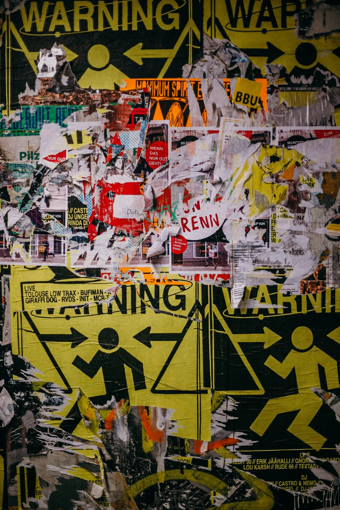

INÍCIO
SOBRE BERLIM
PONTOS TURÍSTICOS
O GAMBITO EM BERLIM
O fenômeno que impulsionou o xadrez. Conheça Berlim, a capital da Alemanha onde diversas cenas da série "O Gambito da Rainha" foram gravadas. Disponível na Netflix™.
Visite os principais pontos turísticos de Berlim
Bode Museum

Berliner Mauer
Reichstag
Brandemburger Tor